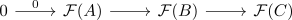
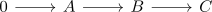
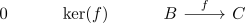
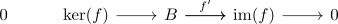
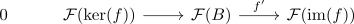

left exact functor and exact sequence
Proposition
Let $\mathcal{A}, \mathcal{B}$ be abelian categories and $\mathcal{F}: \mathcal{A} \rightarrow \mathcal{B}$ be an Ab-enriched-functor (see: ) TFAE:
- $\mathcal{F}$ is a left exact functor
- for an exact sequence $A \rightarrow B \rightarrow C \rightarrow 0$, the induced sequence

is also exact
Proof
1) $\implies$ 2)
Suppose

is an exact sequence.
Then as an additive functor preserves the zero object, we get the sequence
where by assumption $\mathcal{F}(A) \rightarrow \mathcal{F}(B)$ is a kernel of $\mathcal{F}(B) \rightarrow \mathcal{F}(C)$. therefore the sequence is exact.
left exact functor preserves zero morphisms
2) $\implies$ 1)
Consider as exact sequence

Then

is also exact
after applying $\mathcal{F}$ we get

as exact sequence and hence by kernel and exactness it follows that
is a kernel of $\mathcal{F}(B) \rightarrow \mathcal{F}(\mathrm{im}(f))$.
Here $\mathcal{F}$ preserves monomorphism